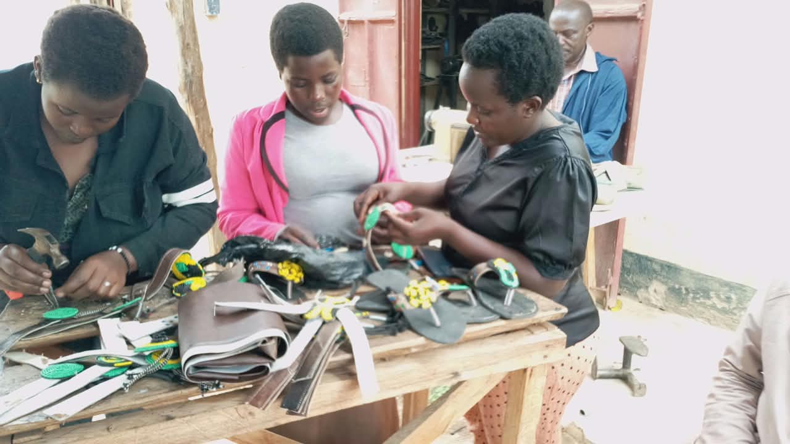

⚙
Vocational & Technical Skills
Hands-on training in motorcycle mechanics, tailoring and garment cutting, and leather design and craftsmanship to support income generation.
Explore training →Equipping orphans, child mothers, persons with disabilities and vulnerable youth in southwestern Uganda with market-driven vocational skills and sustainable livelihoods.

SDI responds to unemployment, illiteracy, poverty and environmental degradation through skills, inclusion and community action.
Hands-on training in motorcycle mechanics, tailoring and garment cutting, and leather design and craftsmanship to support income generation.
Explore training →Space-saving horticulture, nursery management, organic composting and tree planting to strengthen food security and environmental care.
Explore agriculture →Functional literacy, financial literacy and VSLA, health awareness, inclusion and good governance across community programmes.
Explore empowerment →
During a leatherwork and craft skills session at SDI, Rwamwanja, trainees practised making sandals in November 2026. Participants learned to cut, shape and assemble sandals using locally available materials—gaining a practical skill they can use to earn an income and support their families.
SDI works to improve household income and welfare, food security, health, good governance, environmental protection and quality education— reducing suffering among men, women, youth and children.
Discover who we are →“Skills training can open practical opportunities for people to build income, confidence and a more secure future.”
SDI programme approach · Summary of the organisation's mission
SDI welcomes collaboration with local government, community stakeholders, training and certification institutions, donors and technical partners.
Partner names and logos will be added after SDI confirms and approves the organisations to be acknowledged.
Partner with SDI, support practical training or enquire about joining a programme.